Autoregressive Model for Calcium Dynamics
An autoregressive process operates under the assumption that past states affect current states. An autoregressive process of order 1 means that each state is affected by the state immediately preceding it, order 2 means that each state is affected by the two states immediately prior, etc. An autoregressive process of order p (AR(p)) is defined as follows:
Contents
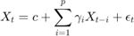
where 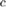 is a constant,  are the coefficients of the process and 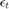 is white noise. In this tutorial, we will look at an AR process that incorporates spike data to generate a model of calcium dynamics. The goal is to get an intuitive understanding of how this particular calcium model works in order to understand its role in calcium data analysis.
are the coefficients of the process and 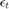 is white noise. In this tutorial, we will look at an AR process that incorporates spike data to generate a model of calcium dynamics. The goal is to get an intuitive understanding of how this particular calcium model works in order to understand its role in calcium data analysis.
Generate spikes from exponential distribution
rate = 1000; % spike rate (Hz) dur = .01; % duration of trial (s) dt = 0.0001; % time step (s) T = (0:dt:dur); spikes = zeros(dur/dt+1,1); % Generating spikes from a exponential distribution for t=1:length(T) if (rate*dt)>=rand spikes(t) = 1; end end
Applying the AR model to Action Potentials
Before implementing the calculation, consider what each of the parameters in the model does. Look again at the AR model.

Consider the following for  :
:
- What does the parameter
 represent?
represent? - How do changes to affect the calcium signal?
- What are reasonable values for this parameter?
Look at what happens when we vary :
p = 1; Gamma = (.5:.05:.99); calcium = zeros(length(spikes),numel(Gamma)); for g = 1:numel(Gamma) gamma = Gamma(g); for t = 2:length(spikes) calcium(t,g) = gamma(p)*calcium(t-p,g)+spikes(t); end figure(1); plot((0:dt:dur),calcium(:,g)+2*g); hold on end title('Calcium concentration for varying \gamma') hold off; legend(num2str(Gamma'))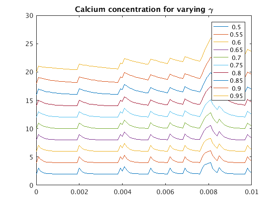
Can you tell what's happening? What if we overlay the plots of the calcium signal with the highest and lowest values of  .
.
figure(2); plot((0:dt:dur),calcium(:,[1,g]))
legend(num2str(Gamma([1,g])'))
title('Comparison of traces with high and low \gamma')
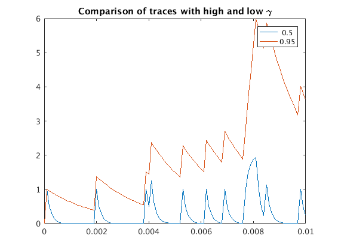 Let's do one more comparison: are the peaks in the same place?
[~,peaklocs] = arrayfun(@(i) findpeaks(calcium(:,i)),[1;g],... 'uniformoutput',false); disp(cat(2,peaklocs{:}))
8 8
11 11
14 14
27 27
29 29
37 37
47 47
77 77
83 83
91 91
100 100
Great! Looks like yes! Now, let's look at what happens when 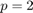. We will start by holding constant and varying 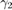.
p = 2; gamma1 = 0.5; Gamma = -(0:.05:.5); calcium = zeros(length(spikes),numel(Gamma)); for g = 1:numel(Gamma) gamma = [gamma1; Gamma(g)]; for t = 3:length(spikes) calcium(t,g) = gamma(1)*calcium(t-1,g)+gamma(2)*calcium(t-2,g)+spikes(t); end figure(3); plot((0:dt:dur),calcium(:,g)+2*g); hold on end title('Calcium concentration for \gamma_1=0.5 with varying \gamma_2') hold off; legend(num2str(Gamma'))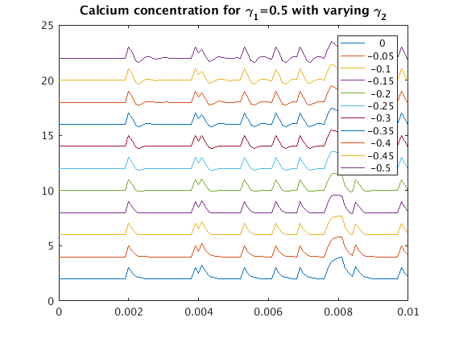
Look at the values of Gamma. Why do you think those values were chosen? Change the parameters and see what happens. Try the following:
- Gamma = (0:.05:.5);
- Gamma = (.2:.05:.7);
- Gamma = -(1.2:.05:1.7);
See if you can explain the behavior that you see in each plot.
Can you tell what's happening this time? Let's do the same as before and overlay the plots of the calcium signal with the highest and lowest values of .
figure(4); plot((0:dt:dur),calcium(:,[1,g]))
legend(num2str(Gamma([1,g])'))
title('Comparison of traces with high and low \gamma_2')
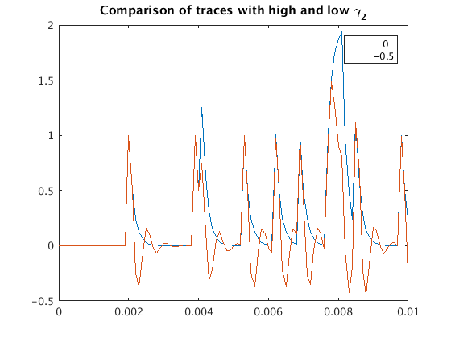 There are some pretty obvious differences now. Okay, now that we have seen that, let's see what happens when we hold constant and vary .
p = 2; gamma2 = 0.5; Gamma = (0:.05:.49); calcium = zeros(length(spikes),numel(Gamma)); for g = 1:numel(Gamma) gamma = [Gamma(g); gamma2]; for t = 3:length(spikes) calcium(t,g) = gamma(1)*calcium(t-1,g)+gamma(2)*calcium(t-2,g)+spikes(t); end figure(5); plot((0:dt:dur),calcium(:,g)+2*g); hold on end title('Calcium concentration for \gamma_2=0.5 with varying \gamma_1') hold off; legend(num2str(Gamma')) % Compare highest and lowest values of gamma(2) figure(6); plot((0:dt:dur),calcium(:,[1,g])) legend(num2str(Gamma([1,g])')) title('Comparison of traces with high and low \gamma_1')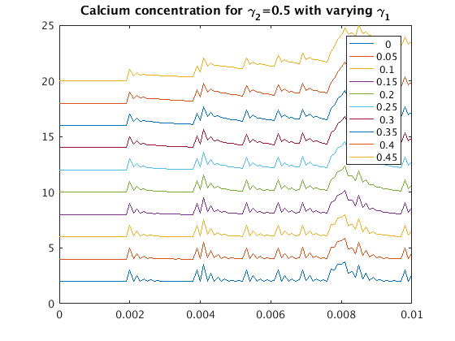 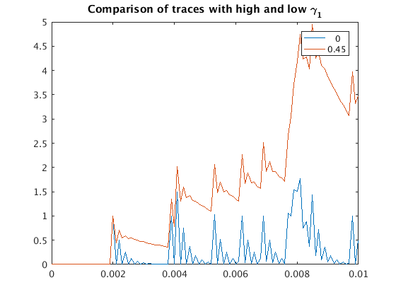
Look at what you see and think about how different values of the AR coefficients change the behavior of the calcium signal.